Box Alignment
“As CSS developers, we are programmers of boxes.”
—Lara Schenck
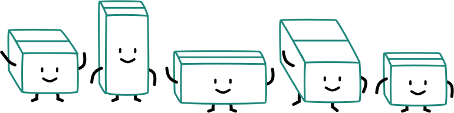
Where do boxes come from?
CSS
“If we hadn’t developed CSS, we could have ended up with the web being a giant fax machine”
—Håkon Wium Lie
📠
Wait, what?
🤨
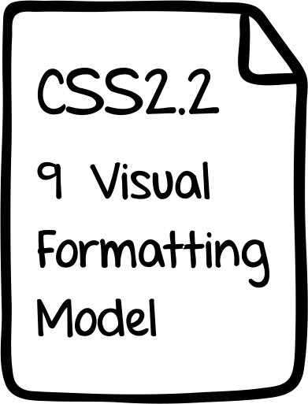
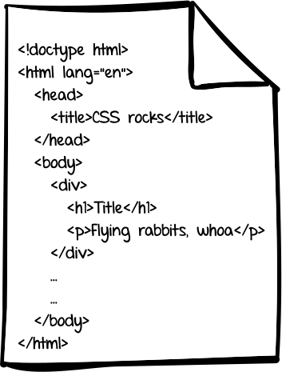
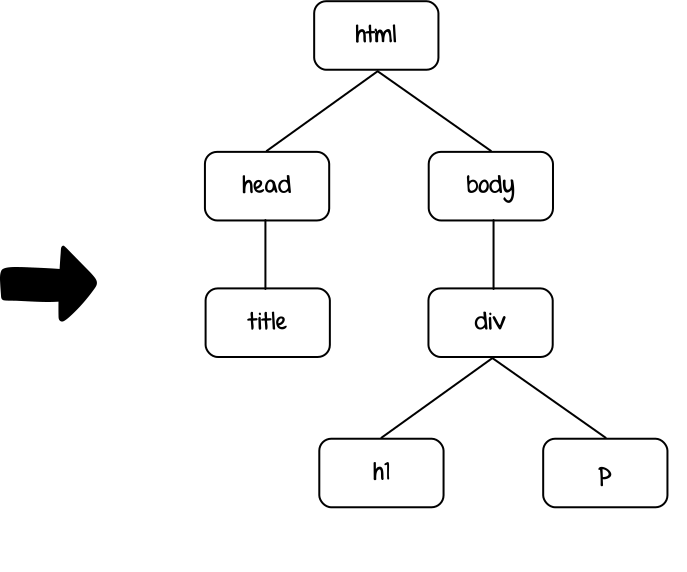
Layout of boxes
- Box dimensions and type
- Positioning scheme (normal flow / float / absolute positioning)
- Relationships between elements in the document tree
- External information (e.g. viewport size, intrinsic dimensions of images etc.)
Positioning schemes
Normal flow
Floats
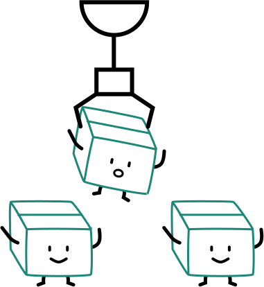
Absolute positioning
What is a formatting context?
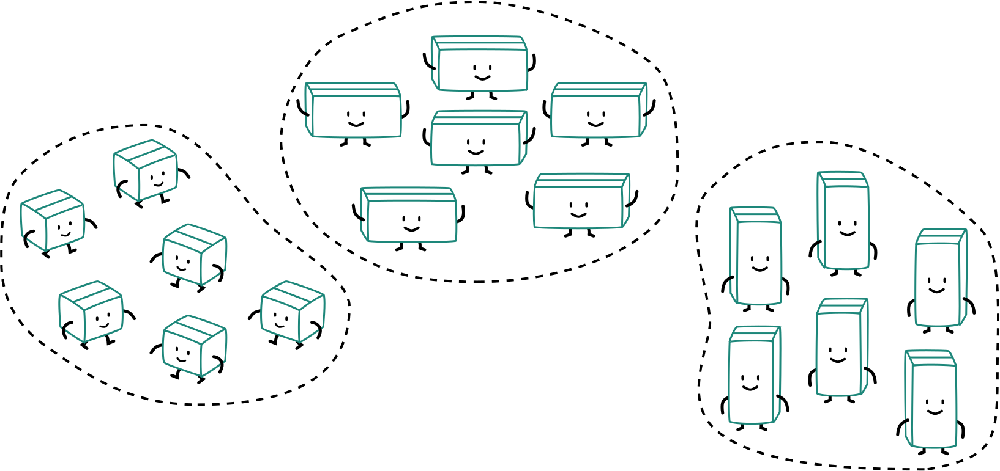
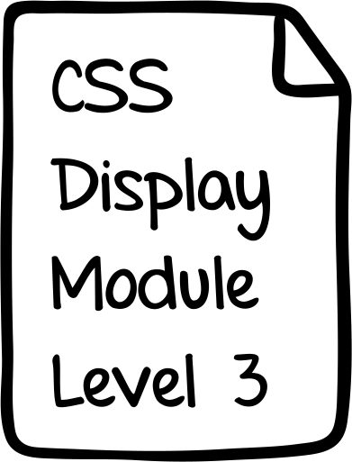
The display property
Defines an element's display type, which consists of the two basic qualities of how an element generates boxes
Inner display type
Defines the generated formatting context for descendant boxes
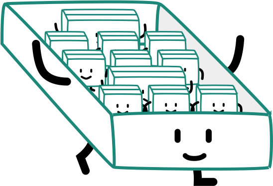
Outer display type
Dictates a principal box's own participation in flow layout
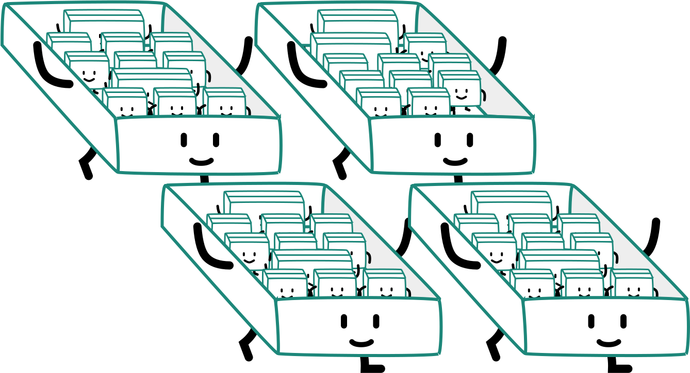
Short display
|
Full display |
Generated box |
| none |
— |
subtree omitted from box tree |
| contents |
— |
element replaced by content in box tree |
| block |
block flow |
block-level block container |
| flow-root |
block flow-root |
block-level block container that establishes a new block formatting context (BFC) |
| inline |
inline flow |
inline box |
| inline-block |
inline flow-root |
inline-level block container |
| list-item |
block flow list-item |
block box with additional marker box |
| inline list-item |
inline flow list-item |
inline box with additional marker box |
| run-in |
run-in flow |
run-in box (inline box with special box-tree-munging rules) |
Short display
|
Full display |
Generated box |
| flex |
block flex |
block-level flex container |
| inline-flex |
inline flex |
inline-level flex container |
| grid |
block grid |
block-level grid container |
| inline-grid |
inline grid |
inline-level grid container |
| ruby |
inline ruby |
inline-level ruby container |
| block ruby |
block ruby |
block box containing ruby container |
| table |
block table |
block-level table wrapper box containing table box |
| inline-table |
inline table |
inline-level table wrapper box containing table box |
Block formatting context
The context that block-level boxes participate in
Boxes are laid out one after another, in the block flow direction, from the start of the containing block

Margins along the block flow direction between adjacent block-level boxes in the same block formatting context collapse
Who establishes new block formatting contexts?
- Floats
- Absolutely positioned elements
- Block containers that are not block boxes
- Block boxes with
overflow other than visible
- Boxes with
display set to flow-root
We need a new BFC because...?
1. Prevent collapsing margins
This is a line of text in a p tag.
I'm a box with margins.
I'm another box with margins.
This is a line of text in a p tag.
I'm a box with margins.
I'm another box with margins.
2. Stop text from flowing around the float
I'm a floated box!
This is just a bunch of text that is going on and on so it's long enough to wrap around the float, line boxes yo!
I'm a floated box!
This is just a bunch of text that is going on and on so it's long enough to wrap around the float, line boxes yo!
3. Contains floats
Floaty! ^_^
Floaty too! :)
Floaty! ^_^
Floaty too! :)
Inline formatting contexts
Established by a block container box that contains no block-level boxes
Boxes are laid out one after another, in the inline direction, from the start of the containing block
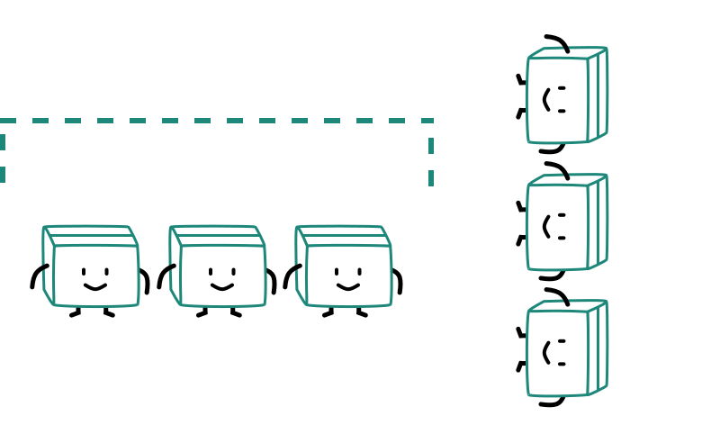
Inline box construction
If an element generates zero boxes, was it really there at all?
If an element generates zero boxes, was it really there at all?
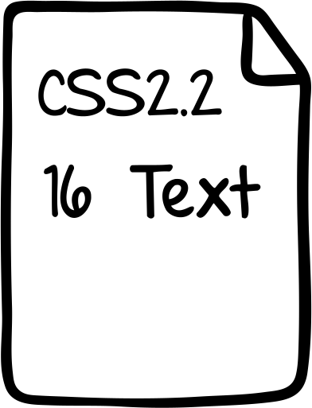
Alignment along the inline-axis
The text-align property aligns inline boxes along the inline-axis

Applicable only when there is extra space available in the line box
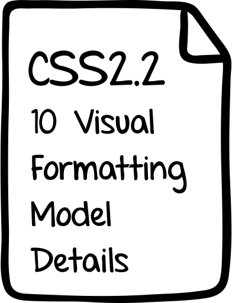
Alignment along the block-axis
Boxes may be aligned along the block-axis in different ways, with the vertical-align property

The height of the line box is based on its font, and its line-height
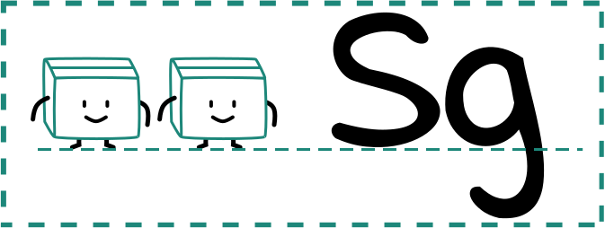
Explaining the inline-block centring technique
I'm a block-level box that needs to be centred along the block-axis.
Centering in the Unknown by Chris Coyier
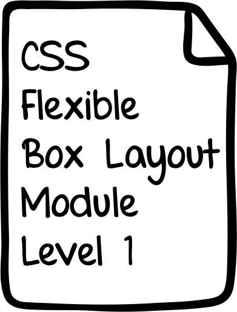
Flex formatting context
Established by a block-level or inline-level flex container box
Flex axes
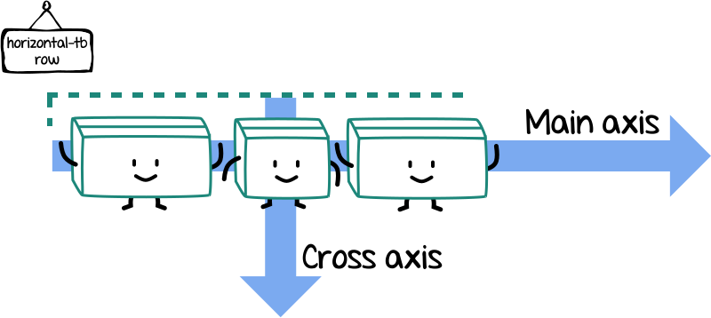
Flex lines
nowrap

wrap
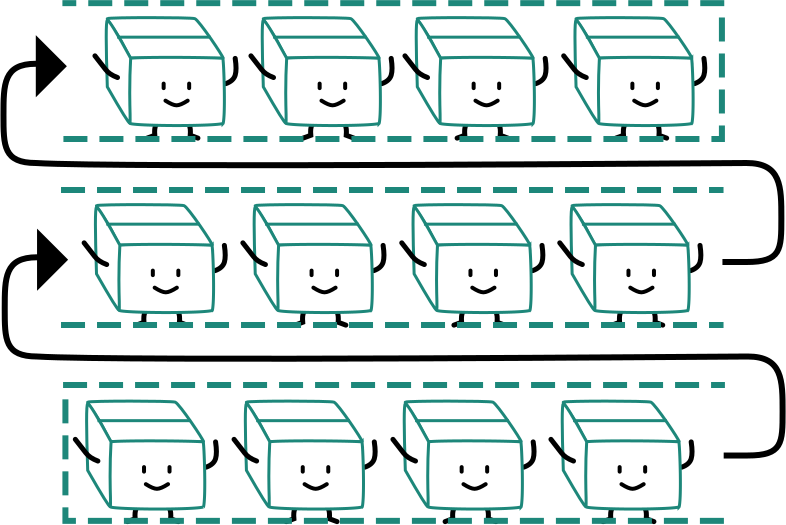
wrap-reverse
Flex directions
1一
2二
3三
4四
5五
6六
7七
8八
9九
10十
11十一
12十二
13十三
14十四
15十五
16十六
17十七
18十八
19十四
20二十
All the directions
Aligning with auto margins
Defining “auto” by Elika Etemad (AKA fantasai)
Aligning along the main axis
justify-content helps distribute extra free space left over after flexible lengths and auto margins are resolved.
1一
2二
3三
4四
5五
6六
7七
8八
9九
10十
11十一
12十二
13十三
14十四
15十五
16十六
17十七
18十八
19十四
20二十
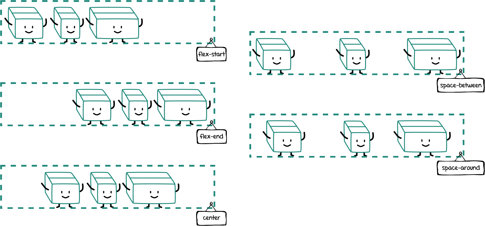
Aligning along the cross axis
align-items sets the default alignment for all flex items along the cross axis of the flex line. Over-ridable by align-self.
1一
2二
3三
4四
5五
6六
7七
8八
9九
10十
11十一
12十二
13十三
14十四
15十五
16十六
17十七
18十八
19十四
20二十
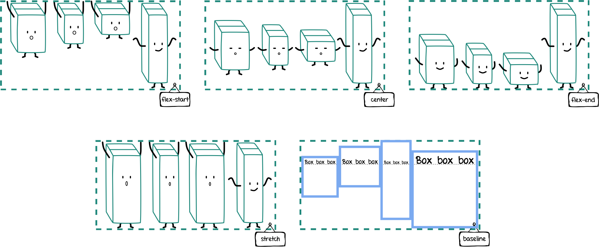
Packing flex lines
align-content aligns flex lines within the flex container if there is extra space along the cross-axis.
1一
2二
3三
4四
5五
6六
7七
8八
9九
10十
11十一
12十二
13十三
14十四
15十五
16十六
17十七
18十八
19十四
20二十
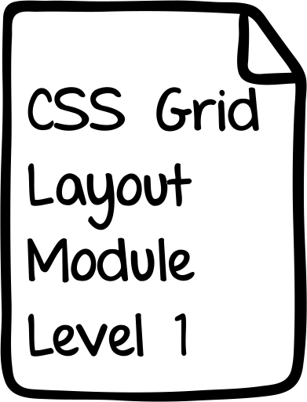
Grid formatting context
Established by a block-level or inline-level grid container box
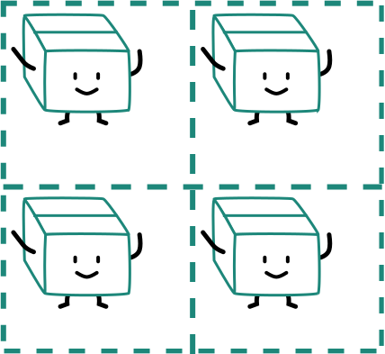
Grid terminology
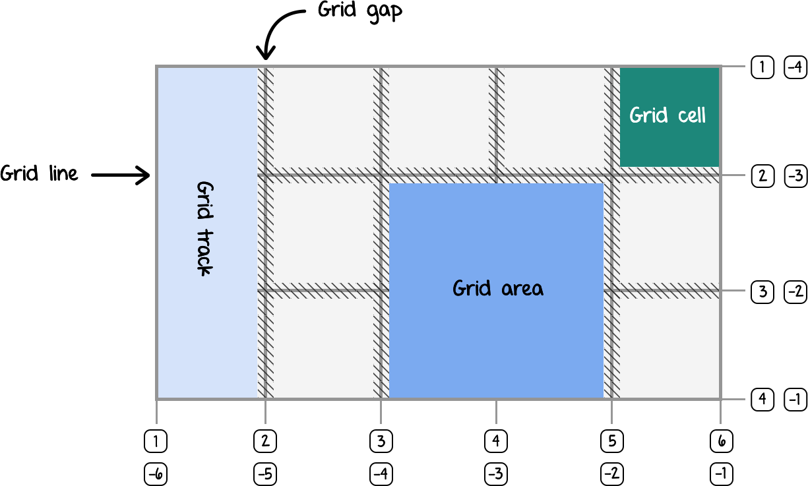
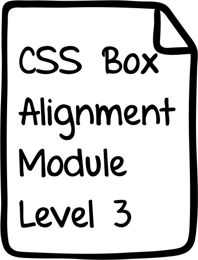
| Property |
Axis |
Aligns |
Applies to |
justify-content |
main/inline |
content within element
(effectively adjusts padding) 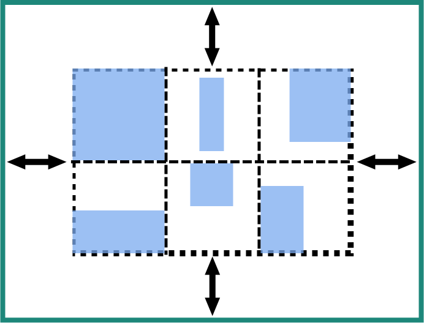 |
block containers, flex containers and grid containers
|
align-content |
cross/block |
justify-self |
inline |
element within parent
(effectively adjusts margins) |
block-level boxes, absolutely-positioned boxes and grid items
|
align-self |
cross/block |
absolutely-positioned boxes, flex items and grid items
|
justify-items |
inline |
items inside box
(controls child items) 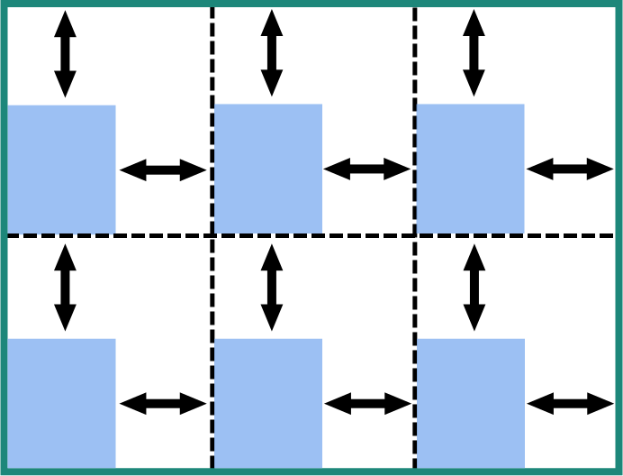 |
block containers and grid containers
|
align-items |
cross/block |
flex-containers and grid-containers
|
| Values |
justify-content |
align-content |
center |
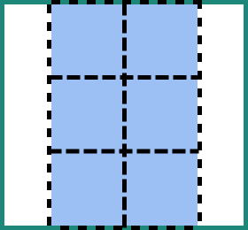 |
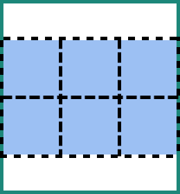 |
start |
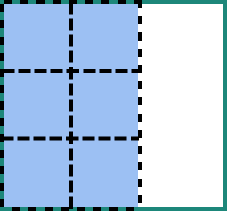 |
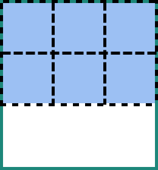 |
end |
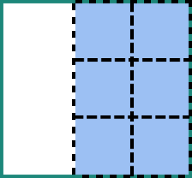 |
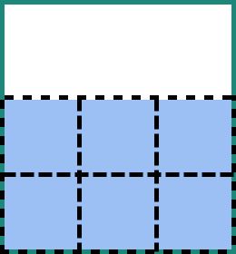 |
space-around |
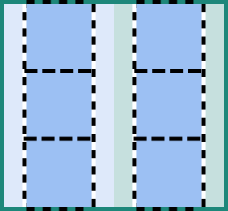 |
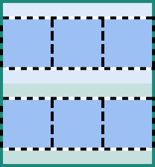 |
space-between |
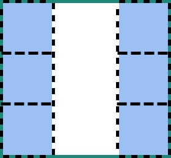 |
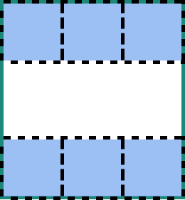 |
space-evenly |
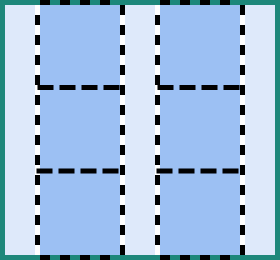 |
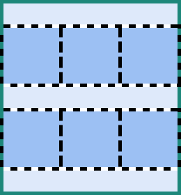 |
| Values |
justify-content |
align-content |
center |
|
|
start |
|
|
end |
|
|
space-around |
|
|
space-between |
|
|
space-evenly |
|
|
justify/align-content
content-distribution properties
justify/align-self
self-alignment properties
justify/align-items
defaults for justify/align-self
Overflow alignment keywords
Original image from Moholy-Nagy, Malerei, Fotografie, Film
Bauhaus in the browser
.grid {
display: grid;
grid-template-columns: 30% 9% 9% 9% 9% 9%;
justify-content: center;
}
.grid__item:nth-child(1) {
grid-column: span 3;
justify-self: end;
border-right: 1em solid;
padding: 1em;
text-align: justify;
text-align-last: justify;
display: flex;
justify-content: flex-end;
align-items: center;
.content {
max-width: 12em;
letter-spacing: 1px;
}
p:last-of-type {
margin-bottom: 1em;
}
}
.grid__item:nth-child(2) {
grid-column: 4 / span 3;
align-self: end;
font-size: 200%;
padding: 0.25em;
}
.grid__item:nth-child(3) {
grid-column: 1 / span 3;
border-top: 1em solid;
border-bottom: 1em solid;
padding: 1em 2em;
letter-spacing: 1px;
text-align: justify;
p:first-child {
margin-bottom: 1em;
}
}
.grid__item:nth-child(4) {
grid-column: 4 / span 3;
border-top: 1em solid;
border-bottom: 1em solid;
display: flex;
align-items: center;
justify-content: center;
}
.grid__item:nth-child(5) {
grid-row: 3 / 5;
border-right: 1em solid;
padding: 1em;
display: flex;
align-items: flex-start;
justify-content: flex-end;
img {
width: 100%;
max-width: 20em;
}
}
.grid__item:nth-child(6) {
writing-mode: vertical-rl;
border-right: 1em solid;
display: flex;
justify-content: flex-end;
align-items: center;
}
.grid__item:nth-child(7) {
padding: 0.5em 0.25em;
font-size: 85%;
border-right: 1em solid;
}
.grid__item:nth-child(8) {
border-left: 0.5em solid;
display: flex;
justify-content: center;
align-items: center;
}
.grid__item:nth-child(9) {
letter-spacing: 1px;
padding: 0.5em 0.25em;
border-right: 1em solid;
}
.grid__item:nth-child(10) {
grid-row: 3 / 5;
grid-column: 6;
justify-self: center;
align-self: center;
}
.grid__item:nth-child(11) {
grid-column: 2 / 4;
letter-spacing: 1px;
padding: 0.5em;
border-top: 1em solid;
border-right: 1em solid;
}
.grid__item:nth-child(12) {
border-top: 1em solid;
border-right: 1em solid;
}
.grid__item:nth-child(13) {
border-top: 1em solid;
border-right: 1em solid;
}
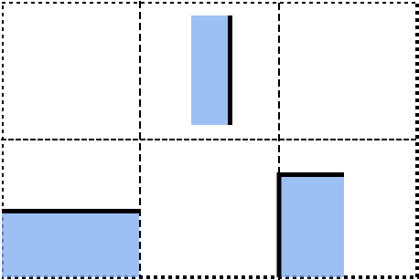
These are not the borders you are looking for
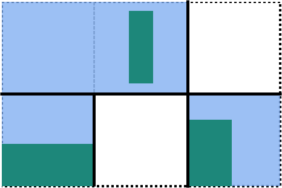
That's more like it
References and resources